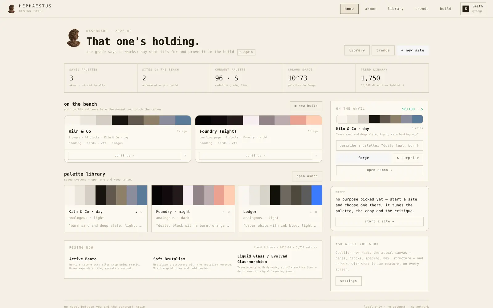
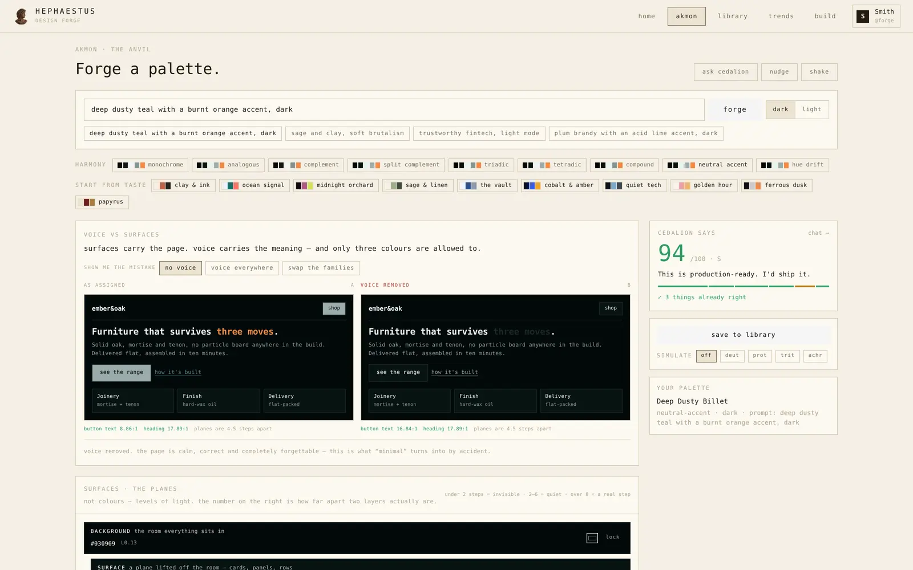
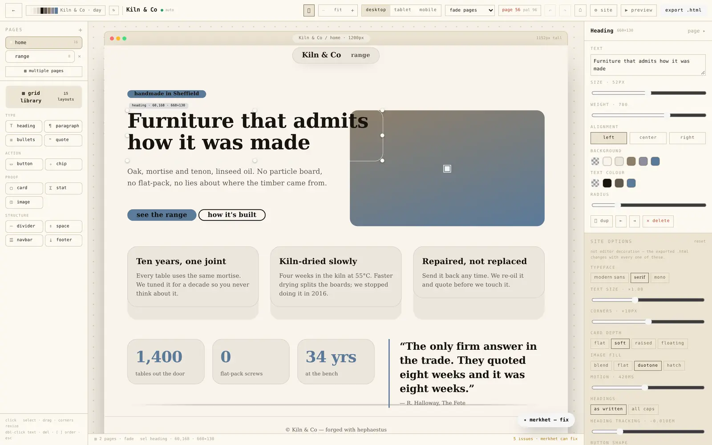
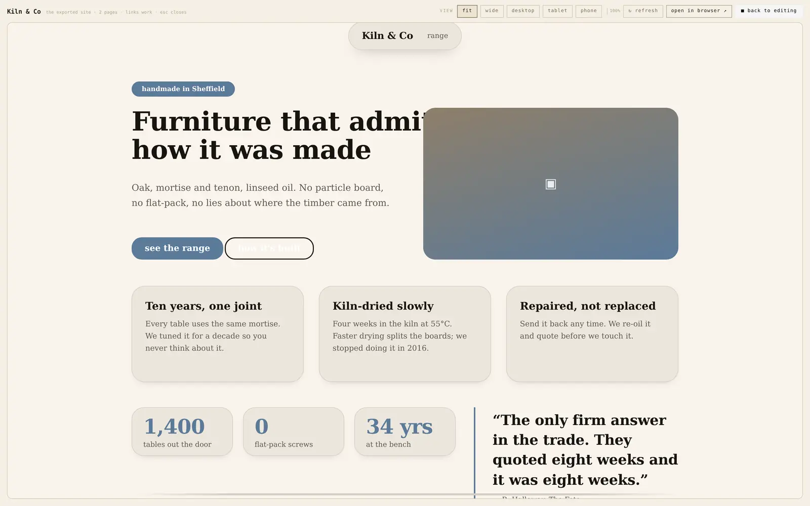
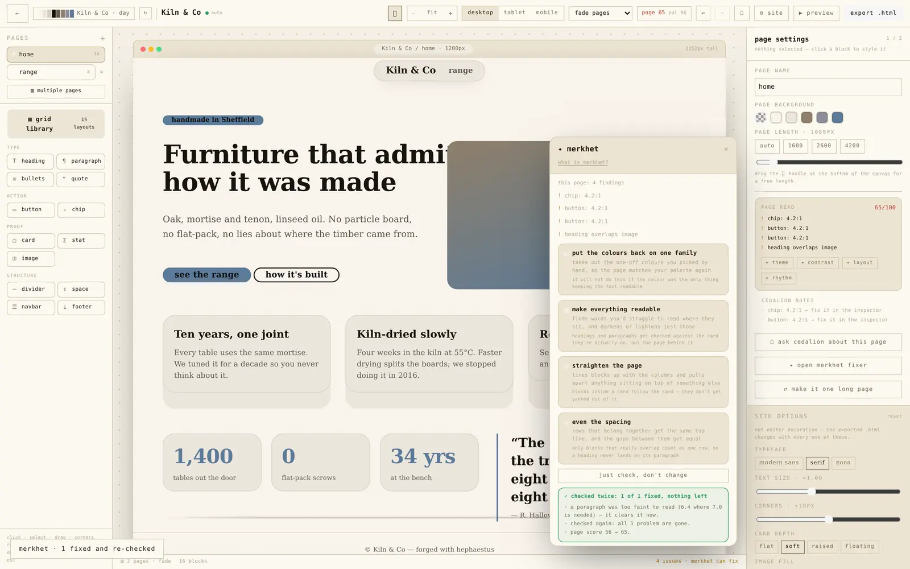
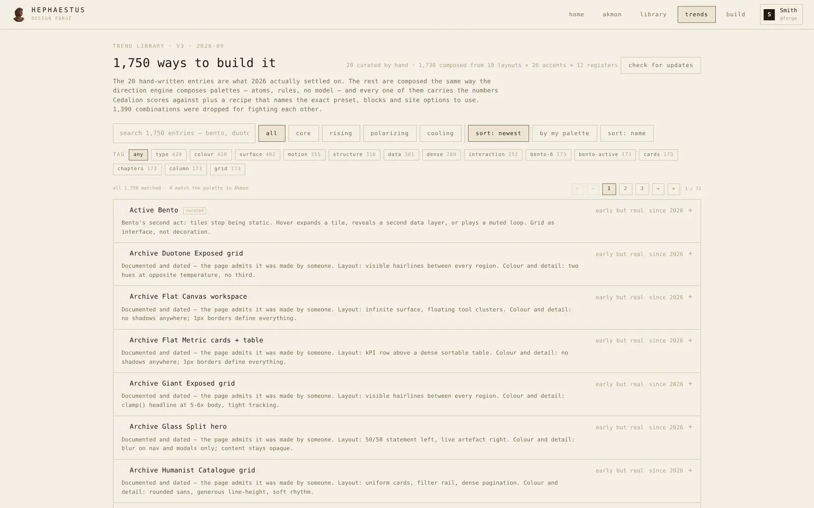
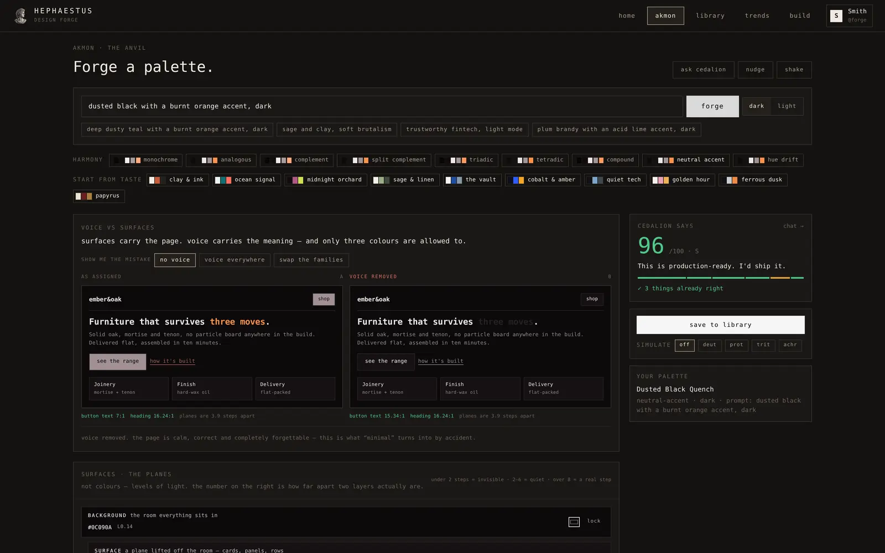
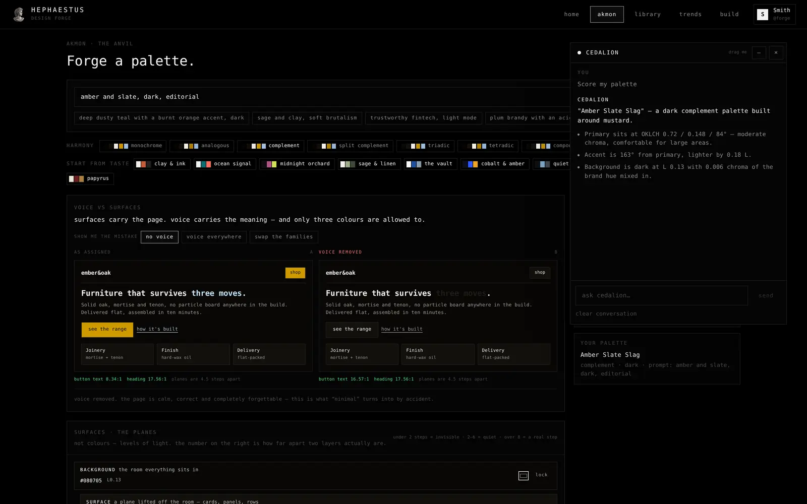

Four things, all of them yours
§ 01 — WHAT IT DOESNo cloud, no seats, no monthly bill. It's one program on your machine that does the parts of design that are tedious and repeatable.
Colours from a sentence
Type what you want — "calm banking app", "loud poster" — and it builds the whole palette: background, text, accents, borders, states. Contrast is checked while it works, not after.
Layouts that stay tidy
Drop blocks on a canvas and everything keeps its alignment and spacing. Pages, links between pages, and an HTML export when you're done — previewable before you ship it.
A review you can argue with
Point it at a design and it lists what's weak — contrast too low, spacing too tight, too many colours fighting — each with a specific fix it will make, or not, at your word. It never claims a repair it hasn't measured twice.
Places to start
1,750 directions with colours, type and layout rules already paired, each one with a picture and a recipe. Browse them, search them, steal one, keep going.
What it looks like
§ 02 — SCREENSThe running app, shot at 1600 × 1000 — no mockups, no studio retouching. Both Claude skins are in here: the cream one and the dusted-black one. Scroll a picture out of view and it falls back apart into blocks; bring it back and it assembles again.








What it isn't
§ 03 — THE CATCHWorth saying out loud, because most tools avoid it.
- No AINothing generates your work and nothing sends it anywhere. Rules and measurements instead — which means the same input gives the same answer, every time, and you can look up why.
- No account, no telemetryIt runs offline. Your files stay on your disk. The only network request on this page is the one that reads your latest release from GitHub, and it's a public endpoint.
- No subscriptionIt's free, it's MIT, and the whole thing — every rule, every measurement — is in the repo. Take it, build it, change it.
- Not a Figma replacementIt won't do multiplayer, prototypes or plugins. It's strong at exactly the four things above and quiet about the rest.
- Even this page is by ruleThe bust above is the app's own mark quantised onto a 56-block grid with a 4×4 Bayer dither and seven warm tones. The script that made it is in
tools/pixel-art.py— 200 lines, no model.
Get it
§ 04 — DOWNLOADPick your system. The three buttons below read the newest release on GitHub and fill themselves in, so this page is never out of date.
reading the latest release…
macOS builds aren't signed with a developer certificate yet, so on first launch right-click the app and choose Open. Everything else installs normally.
The code
§ 05 — OPEN, AND HOW TO BUILD ITMIT, whole app and whole site, one folder. No CLA, no contributor agreement, no "core stays closed". If the buttons above are still pointing here, this page simply hasn't been connected to a repo yet — that's one command.
- The engine is 4 files. colour, layout, review, trends — read them in an evening and you know every rule the app has.
- Build it yourself, if the download isn't out yet.
npm run tauri buildand the installer is insrc-tauri/target/release/bundle. - Nothing phones home. No update pinger, no crash reporter, no analytics. An updater that asks before it fetches, if you turn it on.